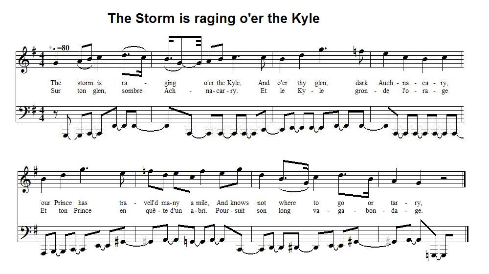

The Storm is raging o'er the Kyle
Prince Charles's Lament
Ascribed to Daniel Weir of Greenock (1796 - 1831)
Tune - Mélodie"The Bonnie House of Airly"
Sequenced by Christian Souchon

|
To the tune:
No tune accompanies this poem titled "Prince Charles's Lament" in Robert Malcolm's "Jacobite Minstrelsy" (1828). As the similar song, "Wae's me for Prince Charlie" , is sung to the tune "Gypsy laddie" which is found, in the "Fiddler's Companion" (cf. Links), to be akin to the tune of "The bonny House of Airly" , the text is set here to a variant of the latter melody. To the Lyrics Daniel Weir , the first historian of Greenock, was born on March 31 1796. He served an apprenticeship in book selling and had a business at 57 Cathcart Street, Greenock. He wrote poetry and song lyrics and contributed several songs to 'Scottish Minstrelsy' by R.A. Smith and also edited three volumes of lyric poems. In 1829 he wrote his most ambitious work, the first published history of Greenock. Daniel Weir died on 11 November 1831. Another Jacobite song by Daniel Weir: The Last of Stuarts |
A propos de la mélodie:
Dans sa "Jacobite Minstrelsy" (1828), Robert Malcolm n'indique pas sur quel timbre se chante ce poème qu'il intitule "Complainte du Prince Charles". Comme le chant similaire, "Le Prince Charles est bien à plaindre" , utilise l'air "Gypsie Laddie", que le "Fiddler's Companion" (liens) rapproche de "The bonny House of Airly" , c'est une variante de cette mélodie qu'on utilise ici. A propos du texte: Daniel Weir , le premier historien de Greenock (à l'ouest de Glasgow), est né le 31 mars 1796. Après son apprentissage comme libraire, il ouvrit son magasin sur la Cathcart Street à Greenock. Il écrivit des poèmes et des textes de chansons dont plusieurs parurent dans la "Scottish Minstrelsy" de R.A. Smith et publia 3 volumes de poèmes lyriques. En 1829 il publia son œuvre la plus ambitieuse, la première histoire jamais publiée de Greenock. Daniel Weir mourut le 11 novembre 1831. Autre chant Jacobite de Daniel Weir: Le dernier des Stuarts |

|
THE STORM IS RAGING O'ER THE KYLE
1. The storm is raging o'er the Kyle, [1] And o'er thy glen, dark Auchnacary, Your Prince has travelled many a mile, And knows not where to go or tarry, He sees, far in the vale below, The wounded soldier home returning; And those who wrought this day of woe, Are round yon watch fire dimly burning. 2. O Scotland long shall rue the day, She saw Culloden drenched and gory ; The sword the bravest hearts may stay. But some will tell the mournful story. Amidst those hills that are mine ain, I wander here a houseless stranger ; With nought to shield me from the rain, And every hour beset with danger. 3. Howl on, ye winds, the hills are dark, There shrouded in a gloomy covering; Then haste thee o'er the sea, my bark, For blood-hounds are around me hovering. O Scotland, Scotland, fare thee well, Farewell ye hills, I dare not tarry ; Let hist'ry's page my suff'rings tell, Farewell Clanranald and Glengary. [2] Source: "Jacobite Minstrelsy" 1828. |
SUR LE KYLE GRONDE L'ORAGE
1. Sur ton glen, sombre Achnacarry. Et le Kyle gronde l'orage [1] Et ton Prince en quête d'un abri. Poursuit son long vagabondage. Dans la vallée, plus bas, il voit Le blessé qui rejoint son gîte, Près du feu blafard d'un bivouac Les vainqueurs de la journée maudite. 2. Longtemps l'Ecosse pleurera Culloden que le sang abreuve. Les meilleurs sont tombés au combat. D'autres diront leur triste épreuve. Parmi ces monts qui sont les miens. J'erre, mais où faut-il que j'aille Pour m'abriter? Je n'ai plus rien. Et les dangers sans cesse m'assaillent. 3. Hurlez, vents, les monts sont couverts D'un voile épais de brume terne. Mon vaisseau, fais-moi franchir la mer! La meute qui rôde me cerne. Ecosse, adieu, mon cher pays, Je n'ose rester d'avantage Adieu, Clanranald, Glengarry. A l'Histoire d'écrire ma page! [2] (Trad. Christian Souchon (c) 2010) |
|
[1]
Kyle
: a woody region in Ayshire. "Coille" means "wood, grove, forest" (Cf. "Killiecrankie", "Coille chreathnaich", meaning "aspen wood").
[2] The Corambian Cave : "Independent of its poetical merit, [this song] is accurately descriptive of the Prince's wretched condition, while at the fastness in the fir wood of Achnacarry , where he was concealed a few days when proceeding to join his friend Lochiel in Badenoch , after eluding his pursuers in the islands. So beset with dangers was the route by which he had to travel to this meeting, and so intersected was the country at every point with military patrols, guarding the passes to prevent his escape, that the Highlanders themselves thought it would be next to a miracle if he should finally accomplish it. Mr Chambers' narrative of his wanderings on this occasion rivals anything in romance. "At one time, after being eight-and-forty hours without a morsel of food, he was obliged to throw himself upon the honour of a band of robbers, whose only refuge and shelter was a rocky cave upon the side of the hill of Corambian . These poor fellows, however, who only robbed from necessity, proved kind, humane, and honourable men; for though they knew the Prince the moment he was introduced to them, and were aware of the immense price set upon his head, they faithfully kept his secret. One of them, whose name was Hugh Chisholm , and who came to Edinburgh a good many years afterwards, communicated to Mr Home, the author of Douglas, a few interesting particulars. He said that when Charles was brought to their cave by Macdonald of Glenaladale, he had upon his head a wretched yellow wig and a bonnet. His neck was cinctured with a dirty clouted handkerchief. His coat was of coarse dark-coloured cloth; his vest of Stirling tartan, much worn. A belted plaid was his best garment. He had tartan hose, and Highland brogues tied with thongs, so much worn that they would scarcely stick upon his feet. His shirt, and he had not another, was of the colour of saffron. A1together, his outward man betrayed the extremity of privation and distress. Although previously informed that it was young Clanranald who was to be introduced to them, they instantly recognised the Prince in spite of his disguise, and kneeled down involuntarily to do him homage. After they had provided a repast for him, which his long fast made him devour almost voraciously, they set their wits to work to renew his wardrobe , and they were not slow in accomplishing even this object. Having learned that a detachment of the King's troops, commanded by Lord George Sackville, was ordered from Fort Augustus to Strathglass, and knowing that it must pass at no great distance from their habitation, they lay in wait for it at a part of the road suitable for their purpose. They first permitted the soldiers to pass and get out of sight, and then, attacking the servants with the baggage, they seized some portmanteaus, in which they found everything that the comfort of the Prince required. Charles remained with this predatory band about three weeks , during which they performed not only the duty of the most faithful body guards, but acted as scouts, spies, and couriers, as circumstances demanded. From Fort Augustus, with which they held regular communications, they brought all sorts of intelligence, collected among the inhabitants, and even occasionally procured the newspapers of the day for the Prince's perusal. The vigilance of the Government patrols, however, continued to be incessant; one of these men was therefore dispatched to Lochaber to endeavour to discover Lochiel , and to inform him of Charles's situation. This he effected, and by means of Cameron of Clunes, who arranged a meeting with his Royal Highness, in a concealed hut at the head of Glencoich. They afterwards joined Lochiel and other friends in Badenoch, though not without running a thousand risks, and suffering incredible hardships. When the faithful robbers consigned the Prince to the guardianship of Clunes and his three sons, who accompanied him, Hugh Chisholm and the man who had gone as courier to Lochiel, were appointed to attend him for some time, till they should think him out of danger. The courier's name was Peter Grant . Chisholm is supposed to have been their chief." According to Mr Chambers, this person while in Edinburgh, was visited by many persons from curiosity. Some of them gave him money, to mark their approval of his fortitude and honour, in resisting the vast allurement of £30,000 offered for the Prince's apprehension, dead or alive. Chisholm always refused his right hand to shake , agreeably to the ordinary custom of salutation, assigning as a reason, that he had got a shake of the Prince's hand, on parting with him, and was resolved never to give that hand to any man till he should meet with the Prince again. Source: Robert Malcolm's "Jacobite Minstrelsy", 1828 |
[1]
Kyle
: une région boisée de l'Ayshire. "Coille" signifie "bois, bosquet, forêt" (cf. "Killiecrankie", "Coille chreathnaich", le bois de trembles).
[2] La grotte de Corambian : "Indépendamment de sa valeur poétique, [ce chant] décrit de façon précise l'état de dénuement extrême où se trouvait le prince dans son repaire forestier d' Achnacarry , où il se cacha quelques jours, alors qu'il tentait de rejoindre son ami Lochiel à Badenoch , après avoir échappé à ses poursuivants dans les Hébrides. Sa route était semée de tant d'embûches, surveillée par tant de patrouilles, les points de passage étaient si bien gardés, pour l'empêcher de s'échapper, que les Highlanders eux-mêmes pensaient que ce serait presque un miracle s'il accomplissait cette gageure. La narration que fait M. Chamber de ses pérégrinations semble tirée d'un roman d'aventures. "Un jour, après avoir passé 48 heures sans avoir rien mangé, il se vit contraint de confier son sort à une bande de brigands, qui avaient trouvé refuge dans une grotte au flanc de la colline de Corambian . Ces pauvres hères que la nécessité contraignait à voler firent preuve de compassion, d'humanité et d'un grand sens de l'honneur. Bien qu'ils aient deviné au premier coup d'œil qu'ils avaient affaire au Prince dont la capture aurait fait leur fortune, ils conservèrent fidèlement leur secret. L'un deux, un nommé Hugh Chisholm vint plusieurs années plus tard à Edimbourg et communiqua à M. Home, l'auteur de Douglas, quelques détails piquants à ce sujet. Il raconta que lorsque Charles fut conduit à leur caverne par McDonald de Glenaladale, il portait une perruque blonde défraîchie et un bonnet. Il avait autour du cou un mouchoir chiffonné et sale. Son manteau était en drap grossier de couleur sombre. Sa veste en tartan de Stirling était tout abîmée. Le plaid entourant sa taille était son meilleur vêtement. Il avait une culotte de tartan et des souliers des Highlands lacés avec des ficelles, en si mauvais état qu'ils lui tenaient à peine aux pieds. Sa chemise, la seule qu'il eût, était jaune safran. Toute son apparence trahissait son extrême dénuement et sa grande détresse. On leur avait dit qu'on leur présenterait ClanRanald le Jeune, mais tous reconnurent immédiatement le Prince et mirent involontairement un genou en terre en signe d'hommage. Après lui avoir apporté un repas qu'un jeûne prolongé lui fit dévorer avec voracité, ils réfléchirent comment ils pourraient renouveler sa garde-robe , et ne tardèrent pas à passer aux actes. Ayant appris qu'un détachement de l'armée royale commandé par Lord George Sackville devait se rendre de Fort-Augustus à Strathglass et qu'il passerait non loin de leur repaire, ils se postèrent sur sa route à un endroit propice. Ils laissèrent passer les soldats jusqu'à ce qu'ils ne soient plus en vue, et attaquèrent l'escorte avec leurs bagages, s'emparant de quelques coffres à vêtements, contenant le linge et tous les effets nécessaires pour habiller confortablement le Prince. Charles resta au milieu de ces larrons près de trois semaines, durant lesquelles ils lui servirent non seulement de gardes du corps zélés, mais d'éclaireurs, d'espions et de messagers, en tant que de besoin. Ils allaient aux nouvelles à Fort-Augustus où ils avaient des informateurs parmi la population et rapportaient même parfois des gazettes du jour à l'usage du Prince. Cependant, la vigilance des patrouilles ne se relâchait pas et l'un de ces hommes fut dépêché à Lochaber pour tâcher de découvrir Lochiel et de l'informer de la situation de Charles. C'est ce qui fut fait par l'intermédiaire de Cameron de Clunes qui prépara une entrevue avec son Altesse Royale dans une chaumière retirée, sur la pointe de Glencoich. Après quoi, ils prirent contact avec Lochiel et d'autres amis à Badenoch, au prix d'innombrables dangers et d'indicibles difficultés. Lorsque les fidèles brigands confièrent le Prince aux bons soins de Clunes et de ses trois fils, Hugh Chisholm ainsi que l'homme qui avait été envoyé en messager auprès de Lochiel furent chargés de veiller sur lui, jusqu'à ce qu'il soit hors de danger. Le nom du messager était Peter Grant . On pense que Chisholm était le chef de la bande." Selon M. Chambers, ce dernier, lorsqu'il habita Edimbourg, reçut la visite de nombreux curieux. Certains lui remirent de l'argent pour récompenser le courage et la droiture dont il avait fait preuve en refusant de recevoir les 30.000 livres offertes pour la capture du Prince, mort ou vif. Chisholm refusait toujours qu'on lui serrât la main droite , comme l'exigent les règles de la politesse, donnant pour raison que cette main avait serré celle du Prince lors de leur séparation, et qu'il avait décidé qu'il ne la donnerait à personne, jusqu'à ce qu'il rencontre à nouveau le Prince. Source: Robert Malcolm, "Jacobite Minstrelsy", 1828 |
|
|
|